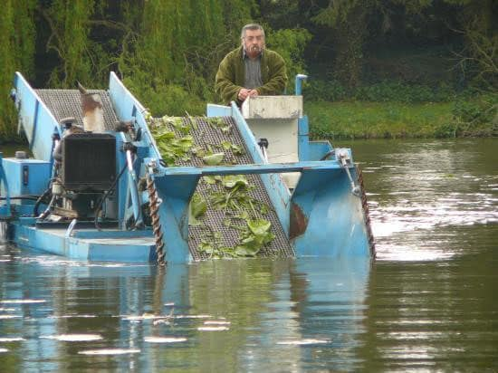
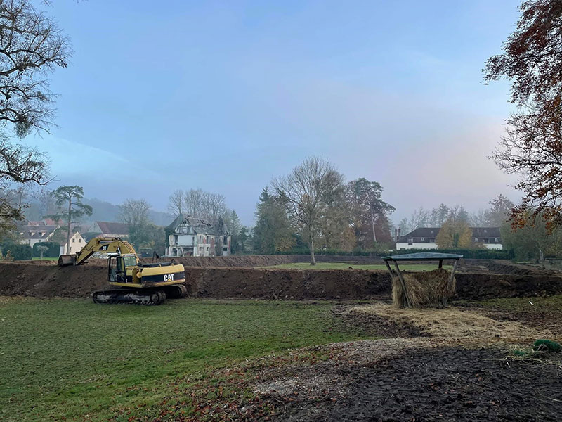

Curage d'étang
Le curage consiste à extraire la vase, les sédiments et les matières organiques accumulés au fond de votre étang. Sans entretien régulier, un plan d'eau peut perdre jusqu'à 50 % de sa profondeur en 20 ans.
Nous intervenons avec des engins adaptés (pelles amphibies, pompes à vase, dragues aspirantes) en fonction de la superficie, de la profondeur et des conditions d'accès de votre site.
- Diagnostic préalable et analyse des sédiments
- Extraction mécanique ou hydraulique de la vase
- Gestion et valorisation des sédiments extraits
- Aide aux démarches loi sur l'eau si nécessaire
- Remise en eau progressive et suivi post-chantier

Faucardage
Le faucardage est la coupe et l'extraction des végétaux aquatiques envahissants : roseaux (Phragmites australis), jussies, myriophylles, potamots… Ces espèces, si elles ne sont pas maîtrisées, peuvent coloniser l'ensemble d'un plan d'eau en quelques saisons.
Notre bateaux faucardeurs et nos engins spécialisés permettent d'intervenir en milieu aquatique sans drainage préalable.
- Identification et cartographie des espèces présentes
- Coupe mécanique et collecte des végétaux
- Gestion des espèces invasives (jussie, myriophylle du Brésil)
- Mise en place d'un plan d'entretien annuel ou bisannuel
- Recommandations pour limiter la repousse

Défenses de berges
L'érosion des berges est un problème majeur pour les propriétaires d'étangs et de plans d'eau. Causée par les vagues, les crues ou simplement le temps, elle peut mener à des glissements de terrain et à la perte de berges.
Nous proposons plusieurs solutions techniques selon la nature du sol, le niveau d'eau et l'exposition des rives.
- Enrochement naturel (blocs calcaires, granite)
- Palplanches bois, acier ou PVC
- Gabions et matelas de pierres
- Géotextile et végétalisation des talus
- Fascines et techniques de génie végétal

Dragage
Pour les plans d'eau de grande superficie ou les sites difficiles d'accès terrestres, le dragage par voie hydraulique est la solution la plus adaptée. Cette technique permet de mobiliser et transporter des volumes importants de sédiments sans drainage.
- Dragage aspirant par pompe immergée
- Dragage mécanique par grue flottante
- Refoulement des boues vers des bassins de décantation
- Gestion des zones humides et protection de la faune
- Interventions sur rivières, canaux et zones portuaires

Protection batillage
Le batillage désigne les vagues générées par le passage d'embarcations (bateaux, péniches…). Sur les canaux et les plans d'eau navigables, ce phénomène provoque une érosion accélérée des berges.
Nous concevons et installons des dispositifs de protection adaptés à votre configuration.
- Boudins anti-batillage flottants
- Pieux et planches de protection
- Enrochements spécifiques au batillage
- Végétalisation renforcée des talus exposés